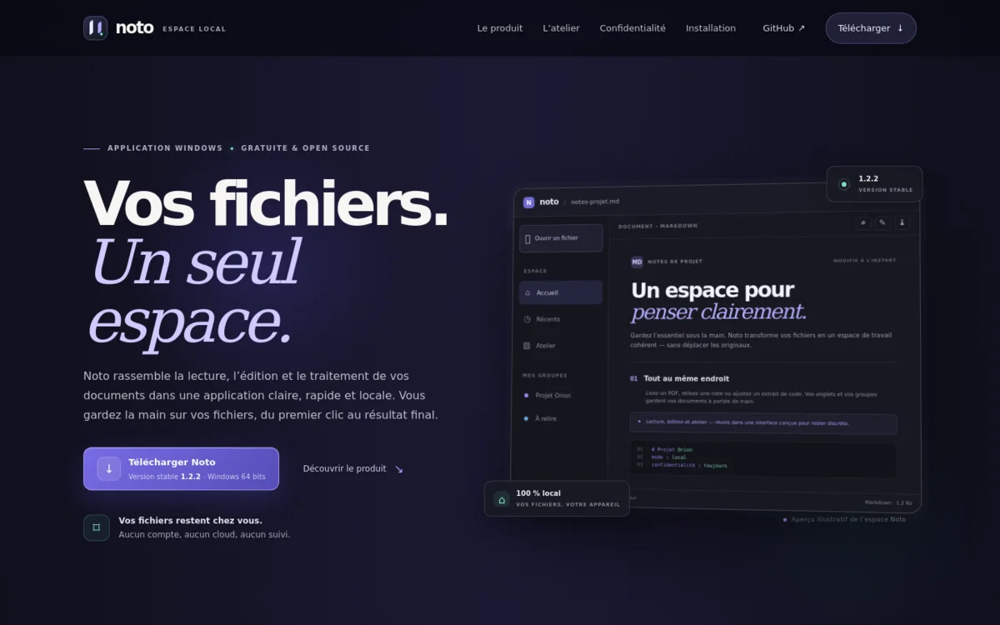
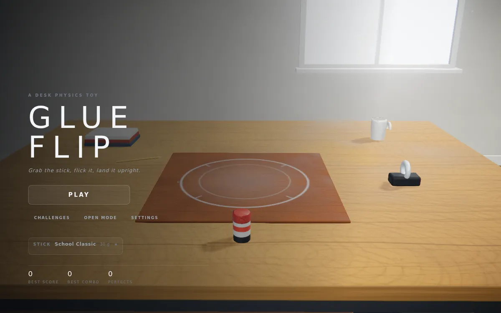
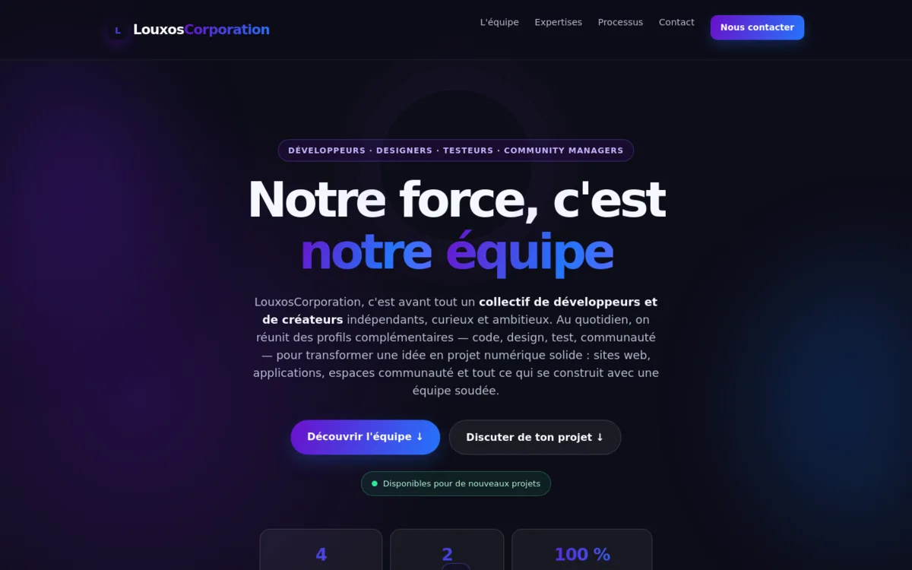

Noto.
Une suite documentaire locale pour lire, modifier et traiter ses fichiers sans compte ni cloud.
DÉVELOPPEUR & CRÉATEUR / ÎLE-DE-FRANCE
J’aime imaginer, construire et faire évoluer des projets numériques. Des premières idées aux petits détails qui font la différence.


DES IDÉES QUI PRENNENT FORME.
01 / PROJETS
Des outils, un jeu et un collectif : trois façons différentes de créer et d’apprendre.
Une suite documentaire locale pour lire, modifier et traiter ses fichiers sans compte ni cloud.
Un jeu de physique 3D : lancer un bâton de colle et tenter de le faire tenir debout.

Le collectif que j’ai fondé pour réunir des profils complémentaires autour d’idées et de projets numériques.
D’autres projets et expérimentations se trouvent sur mon GitHub.
Voir mon profil02 / À PROPOS
Je suis Louis, développeur et créateur. Curieux de nature, constructeur par envie.
J’aime partir d’une idée, lui trouver une direction et lui donner vie à travers le design et le code. Ce qui m’intéresse, c’est de créer des expériences agréables à utiliser et de les améliorer au fil des retours.
J’ai aussi fondé LouxosCorporation, un collectif informel qui rassemble des compétences et des idées autour du numérique.
03 / MA DÉMARCHE
Une façon simple d’avancer, sans perdre de vue ce qui rend un projet utile.
Définir l’idée, poser les bonnes questions et trouver une direction claire.
Donner forme au projet, du design au code, en gardant l’usage au centre.
Tester, écouter les retours et faire évoluer les détails, étape par étape.
04 / CONTACT
Un projet, une question ou simplement envie d’échanger ? Retrouve-nous sur le site de LouxosCorporation.
Nous contacter